Azure Active Directory B2C (AADB2C) is a service that manages user identities and coordinates their access across the different applications in your organization. When provisioning an AADB2C service Azure will create a tenant directory.
The tenant directory is an Active Directory instance that centralizes user identities for a SSO experience across your organization. This means that a user can have a single identity they create and access through multiple identity providers like Microsoft, GitHub or a local account provider that uses an Email and password.
Each AADB2C tenant uses User identity flows, or policies, that customize how a user registers and manages their identity in your organization. These user accounts can be used to authenticate and interact with your organization’s registered applications.
In this walkthrough we will register the Coding Events API application and create a user account in our AADB2C tenant directory. We will then inspect the identity token received after completing the OIDC flow for our registered API.
note
Azure ADB2C is a multi-faceted service. In this walkthrough we will focus on the authentication configuration using identity tokens.
In the following walkthrough we will extend this behavior to protect our registered API by configuring its own access tokens. We will use these tokens for authorization of requests sent from the Postman client application.
Setting up our AADB2C service will involve the following steps:
After we have completed these steps we will register an identity using the SUSI flow and inspect the resulting JWT (identity token). We will be using the Microsoft JWT decoder tool to inspect the claims within the identity token.
Note
The screenshots for this walkthrough use the generic student name.
Anywhere you see <name> or student you should replace with your name.
From the dashboard of the Azure Portal select the Create a resource button:
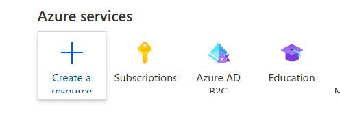In the search box enter: Azure Active Directory B2C then select create:
Before linking to a Subscription we have to create the tenant directory, select the first choice:
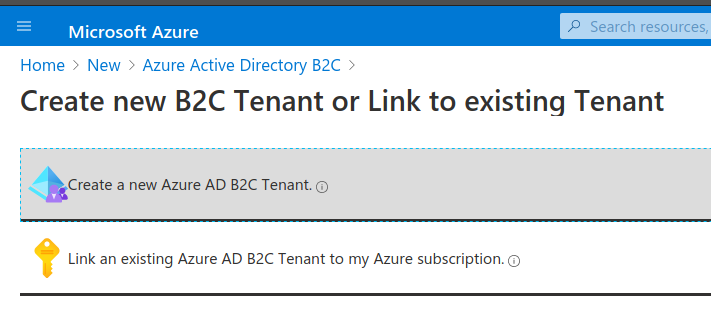This will present the AADB2C creation form. Enter the following values:
<name> ADB2C (the tenant directory name)<name>0720tenant (subdomain name of your tenant on the .onmicrosoft.com domain Azure provides)Note
The pattern for the subdomain is: <name><MMYY>tenant. To ensure the subdomains are unique select the correct month and year when you are taking the course.
Select Review and create and confirm that your configuration matches the image below. Then create it.
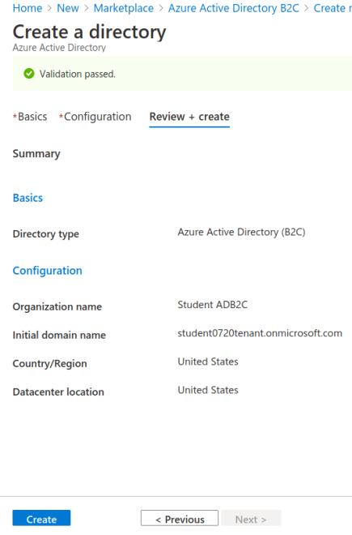The new tenant directory is not usable until it is linked to an active Azure Subscription.
Tip
We will not dicuss the relationship between Azure accounts, Subscriptions, and directories. If you are curious, this forum post has some great discussion and links to further reading.
After creating the tenant directory you can click the Create new B2C Tenant or Link to existing Tenant link in the upper-left breadcrumb links. If you are signed into Azure you can click this link to navigate directly to it.
The link will take you back to the initial AADB2C view. This time select the second option to link the tenant:
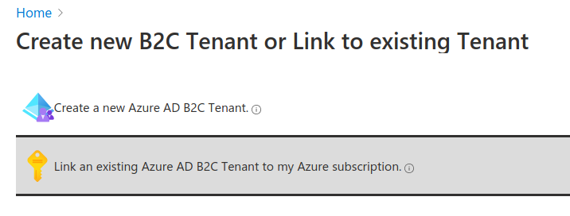The Subscription linking form will require:
Warning
Make sure you select the correct Subscription. This will be the Azure Labs Subscription Handout that you received during initial registration, not your personal Subscription.
The Subscription name will likely differ from the screenshot below.
For the RG create a new one with the name adb2c-deploy-rg. It will house both this linked tenant as well as the other resources we will provision in the upcoming Studio deployment.
Check that your form matches the image below and that you have chosen the Azure Labs Handout Subscription, then you can create the link:
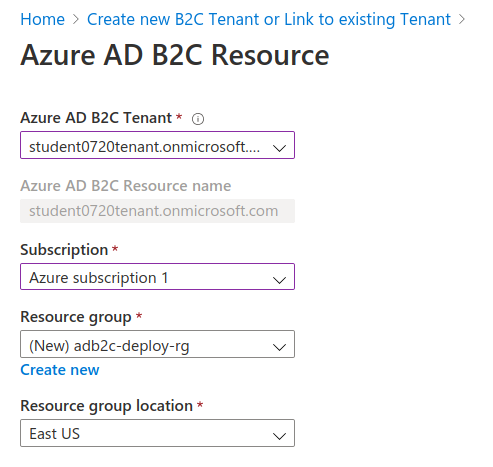Now that our AADB2C tenant is set up we can register our Coding Events API application. The AADB2C accounts we create exist as part of the tenant directory. Each application that is registered with the tenant directory allows it to integrate with the identities of those user accounts.
As a result, registering an application is a configuration that takes place within the tenant. For this reason we will need to switch to the tenant directory.
In the search bar at the top of the Azure Portal enter: <name>0720 and select the tenant resource:
This will send you to the linked ADB2C tenant resource view:
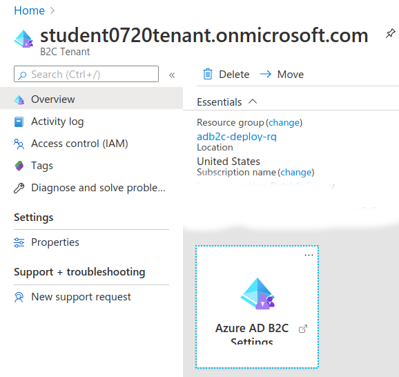Select the Azure ADB2C Settings icon. This will open a new tab in the tenant directory:
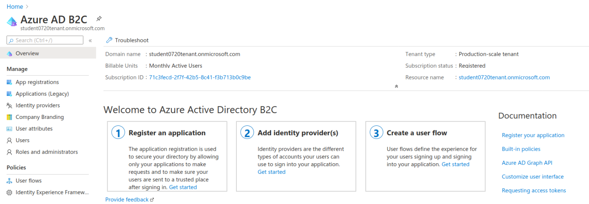Tip
In the top-right corner notice that in this new tab your Azure directory has been automatically switched. It should now say you are in the <Name> ADB2C tenant directory rather than your Default directory.
On the left sidebar select the App Registration link. Then select New registration:
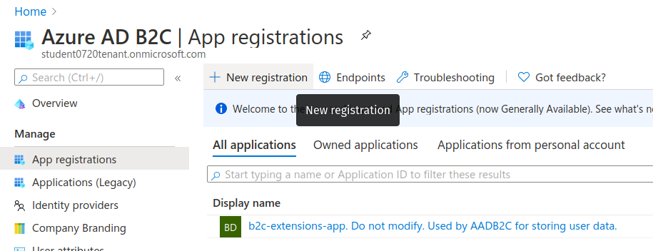For this form we will leave all of the default settings except for the following:
Coding Events APIhttps://jwt.msFor the Redirect URI we will provide the URL of the Microsoft JWT tool. After authenticating and being redirected, the tool will automatically extract the identity token and provide a UI for inspecting it.
Confirm that your configuration matches the screenshot below, then select Register:
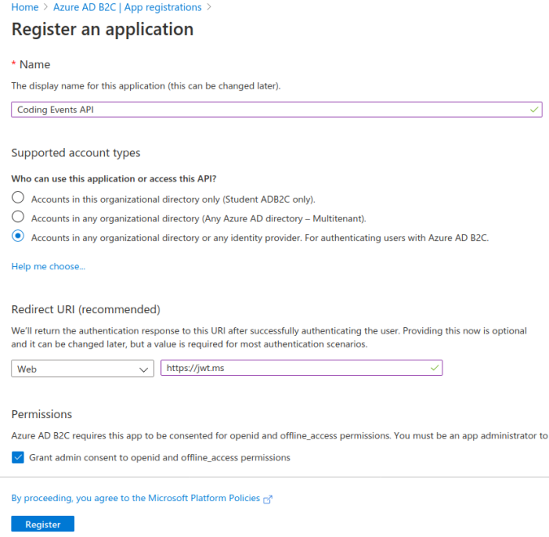After registering you will be sent to the Coding Events API application dashboard. Each registered application will have its own dashboard like this one that allows you to configure it independently from the others.
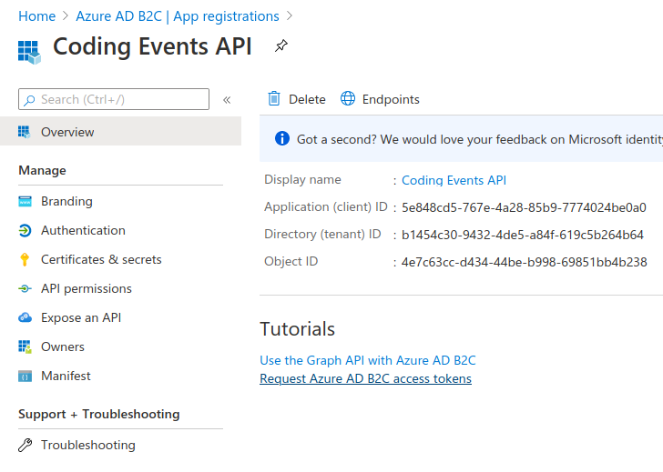We will need to configure this application to support the implicit grant OAuth flow for receiving the identity token of an authenticated user. In the left sidebar select the Authentication settings.
We will leave all defaults except for the Implicit grant section. Scroll down to this section then select both checkboxes to enable the implicit grant:
Confirm your configuration matches the screenshot below then use the Save icon at the top:
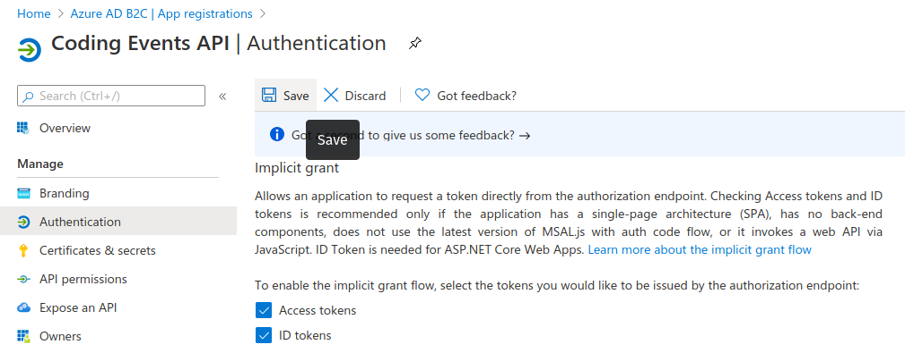Before continuing to the next step, return to the tenant dashboard. You can use the Azure AD B2C | App Registrations breadcrumb link at the top as a shortcut.
The final step of our configuration is to set up a User Flow for registering and authenticating users in our AADB2C tenant directory. We will be configuring a Sign Up / Sign In (SUSI) flow with an Email provider to manage these identifies with an email and password.
After users have created accounts in the tenant directory our registered application (the Coding Events API) will be able to use their identifies.
A User Flow (identity flow) allows you to customize the user processes for interacting with their AADB2C account. Such as creating an account and signing in or out.
For each User Flow you can configure:
Each flow can specify the claims (user attributes) that need to be collected from the user during registration and returned in the identity token.
Claims are used to standardize the identity data that is collected across the identity providers used in a flow. Some examples of claims include common built-in claims like:
Job TitleLegal Age Group ClassificationYou can also define custom claims that apply to more specific use cases.
In the left sidebar of the tenant dashboard switch from App Registrations by selecting the User Flows option under Policies.
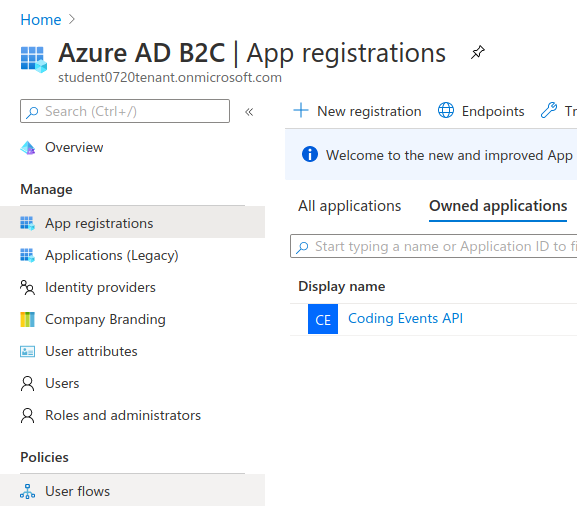In the User Flows view select New User flow:
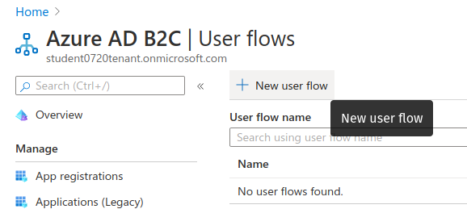Then select the recommended Sign up and sign in (SUSI) flow template:
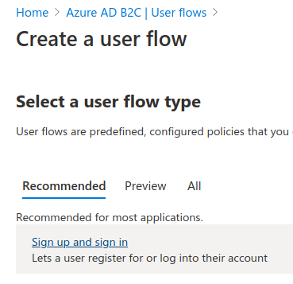This will present the SUSI flow form. As mentioned previously we will allow users to register using the generic Email provider.
Note
The Email provider is available by default. Additional providers can be configured in the Identity providers settings on the left sidebar. After they are configured they will be available for use in creating or editing your tenant’s User Flows.
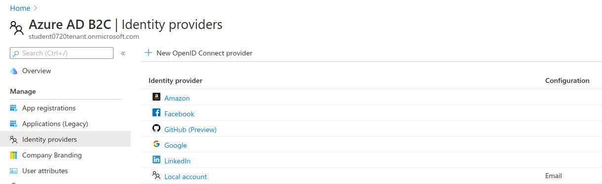For the top half of the form (steps 1-3) configure the following settings:
B2C_1_ prefix enter susi-flowEmail signup providerdisabledScrolling down to the bottom half of the form you will see a section for configuring the claims. Claims are separated into collected (during registration) and returned (in the identity token).
For our SUSI flow we will use the following collected claims:
Display Name (username)Email AddressAnd the following returned claims:
Display NameEmail AddressesUser's Object IDNote
The User's Object ID (OID field) is the unique identifier for each user within the AADB2C tenant. It can be found at the end of the claims sidebar.
Click the show more link to open the full claims selection panel. Select each collected and returned claim then close the panel.
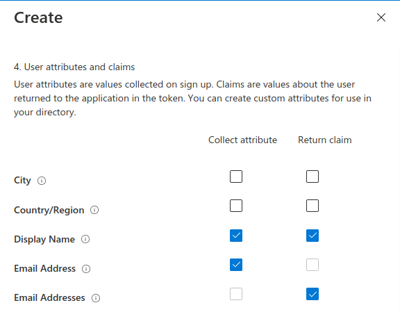 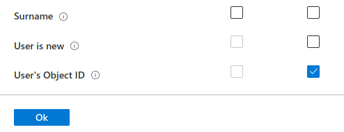After setting the claims you can create the SUSI flow. This will send you back to the User Flows view:
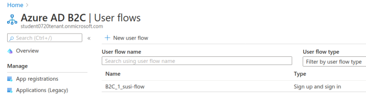Our final step is to test out the SUSI flow we created. We will register our first user accounts in the new AADB2C tenant using this flow. After registering we will inspect the identity token and the returned claims that were included in it.
From the User Flows view select the new flow, B2C_1_susi-flow. This will take you to the SUSI flow dashboard where you can modify and test (run) the flow:
Note
For our purposes we used the built-in claims and default UI styling provided by AADB2C. However, from this dashboard you can modify the flow’s:
In the top left corner of the SUSI flow dashboard select the Run user flow button:
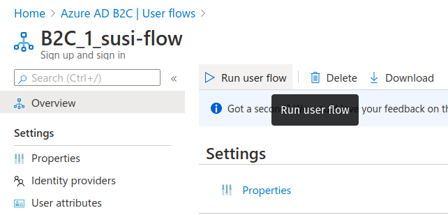This will open the flow sidebar panel:
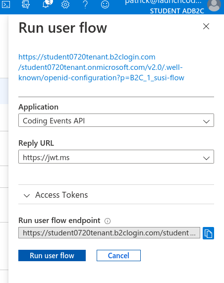At the top of the panel you will see the OIDC metadata URL.
Note
This document provides metadata with the OIDC endpoints for using the AADB2C identity management service. Although it is human readable it is meant for programmatic access by applications to integrate into the AADB2C system.
The run flow panel allows you to test out the flow with a specific application and reply (redirect) URL. In our case we only have a single application and reply URL to choose from. Select the Run user flow button to open a new tab with the AADB2C tenant login page:
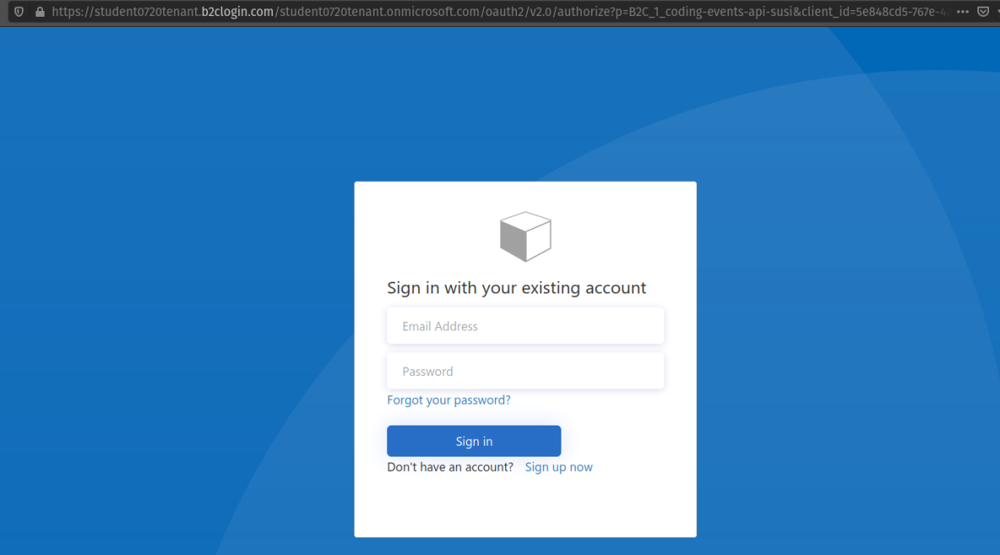Initially the AADB2C tenant directory will not have any user accounts in it. Let’s create a new account by selecting the Sign up now link at the bottom.
You will need to provide and verify your email address.
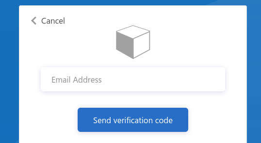Azure will email you a temporary verification code which you need to enter:
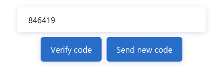After verifying your email address you need to provide a username and password. The password has default security constraints that require a relatively complex value:
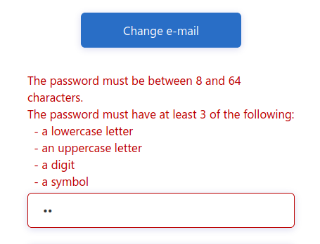As with other passwords in this course we will all use the same one to make troubleshooting more consistent:
LaunchCode-@zure1The username field is presented because we chose the Display Name collected field when configuring the SUSI flow. You can enter your name here (in place of student in the screenshot):
After registering you will be redirected to the redirect URL (https://jwt.ms). This tool will capture the JWT identity token and decode it for inspection.
Congratulations, you now have your first managed user identity!
As a reminder the redirect will provide the identity token as a query parameter (id-token) which you can view in the URL bar. The Microsoft JWT tool will automatically extract this token from the URL and decode it.
From within the tool you can view the decoded JWT:

Selecting the Claims tab will switch to a break down of the claims in the payload. For each claim you can view a description of its meaning and usage:
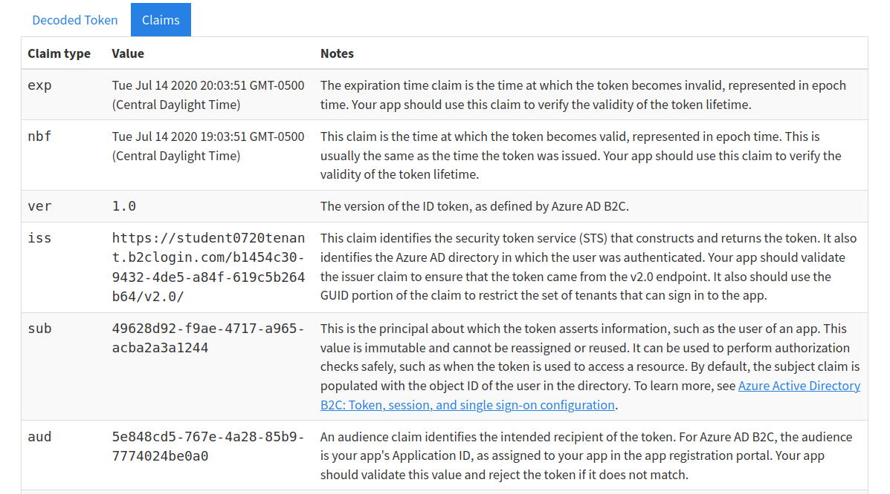Notice that these claims describe the relationship between the user (you), the AADB2C tenant (the identity manager) and the registered application that receives the token (the Coding Events API) recipient of the token (the Coding Events API):